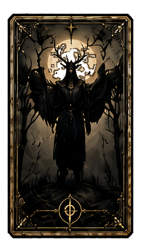
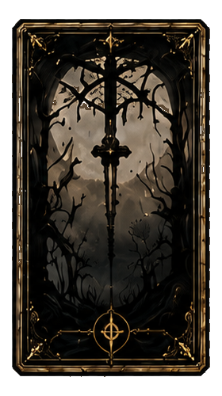
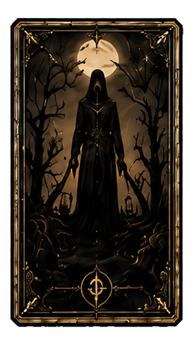
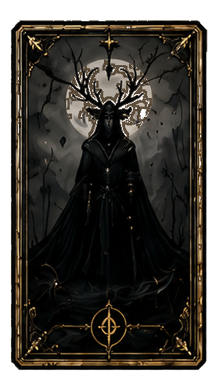
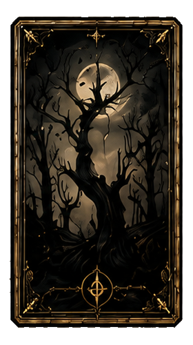
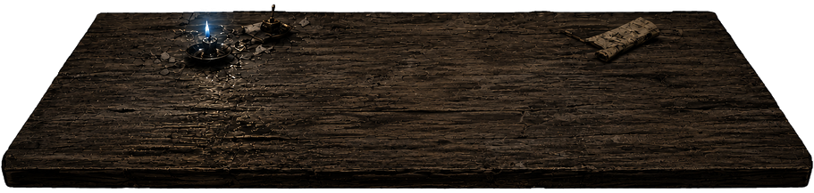

행동 선택
의식 행동
탁자 위의 의식 도구를 선택하면 행동 카드가 펼쳐진다.
- 비용
- 0
- 분류
- 행동






탁자 위의 의식 도구를 선택하면 행동 카드가 펼쳐진다.
이안은 피 묻은 곰 인형과 낯선 미소로 아침을 맞았다. 다락방 일기장은 오래 닫힌 방, 금이 간 거울, 그리고 비어 있는 기록을 가리킨다.
같은 기억을 반복해서 파고들면 이안의 방어기제가 흔들린다. 두 번째 선택은 진실이 아니라 거울 안쪽에서 흘러든 확신을 남길 수 있다.
아직 거짓으로 드러나지 않은 문장은 기록서에 단서처럼 남는다.
진명 조각 3개를 모두 확보해야 이름을 부를 수 있다. 조건이 충족되기 전까지 진명 카드는 화면에 나타나지 않는다.
거울 안쪽의 것은 이안의 반복 행동에 반응한다. 확정되지 않은 행동은 기록하지 않는다.
누적 침묵 0/3. 침묵이 반복될수록 검은 실은 손목을 더 깊게 기억한다.